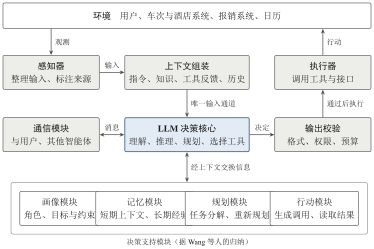

6.2 智能体的组成
定义说智能体要能感知、决策、行动，那么落到工程上，一个智能体到底由哪些部分组成，每部分负责什么？本节把它拆成五个部分：感知器把环境信息整理成模型能读的输入，决策系统（以 LLM 为核心）决定下一步，执行器把决定变成对环境的操作，环境是感知和行动的对象，通信模块负责智能体与用户、与其他智能体之间的信息交换。结论是：LLM 处在中心，但它与外界的一切交换都要经过“上下文”这一条通道，而执行器是模型的错误真正落地的地方。
6.2.1 五个组成部分
一个智能体由五个部分组成[4],[5]：感知器、决策系统、执行器、环境和通信模块。前四者构成单个智能体的闭环，通信模块用于智能体与用户、智能体与智能体之间的信息交换。下面先说清数据怎么流动：环境的信息经感知器整理，与指令、记忆、工具说明一起组装成上下文交给 LLM；LLM 输出下一步的决定，经校验后交给执行器；执行器作用于环境，环境的变化又被感知器捕获（图 6-3）。

图 6-3 以 LLM 为决策核心的智能体结构。环境信息经感知器整理、与指令和记忆一起组装成上下文后才进入 LLM；LLM 的决定经校验后由执行器作用于环境。下方四个模块为决策系统提供角色、历史、计划和行动接口
感知器（perceptor） 负责采集环境信息，并把各种来源的输入整理成决策系统能使用的形式。软件智能体的输入主要有四类：用户的自然语言（文字或语音转写）、API 返回的结构化数据、文档与网页内容，以及系统内部的状态变化（定时器触发、审批状态改变）。难点不在“拿到”，而在“整理”：同一条信息可能以 JSON 字段、表格单元格、PDF 段落或聊天消息的形式出现，需要统一成带来源标注的文本片段，才能放进上下文。
决策系统（decision system） 是智能体的“大脑”，负责处理感知输入并做出决策。在 LLM 智能体中，它由三部分配合完成：语言模型负责理解与推理；上下文管理决定“此刻让模型看到什么”；规划部分把目标拆成可执行的步骤。三者不是并列的模块，而是嵌套关系：规划是通过提示驱动模型完成的，而模型的输入又由上下文管理负责组装。第 6.2.2 小节详细讨论。
执行器（actuator） 负责实施决策系统的指令，对环境进行物理或虚拟的操作。软件智能体的执行器是工具（tool）：搜索、计算、读写文件、发邮件、调用业务系统；机器人的执行器是电机、机械臂。第 6.2.3 小节讨论它的设计原则。
环境（environment） 是智能体感知和行动的对象，它的性质决定了设计约束，见第 6.2.4 小节。
通信模块（communication module） 在多智能体系统中负责消息传递、任务分派、结果汇总和冲突消解；面对用户时，它负责把内部的执行过程翻译成用户能看懂的说明，并接收用户的确认或修改。
图 6-3 下方的四个模块来自 Wang 等人的综述[4]对 LLM 智能体的归纳：画像模块（profile）规定智能体的角色、目标与约束；记忆模块保存短期上下文和长期经验；规划模块负责任务分解与重新规划；行动模块把决定转成工具调用并读取结果。它们不是与五个部分并列的另一套划分，而是从“决策系统需要什么支持”的角度对决策系统的细化：画像和规划属于决策系统本身，记忆为决策系统提供历史，行动模块是决策系统与执行器之间的接口；感知器、环境和通信模块不在其中。四个模块都要把内容写进上下文才能影响模型，而上下文窗口的长度是有限的，第 6.5.6 小节的上下文工程正是围绕这一瓶颈展开的。
6.2.2 决策系统：以 LLM 为认知内核
决策系统是不同智能体能力差异的主要来源。LLM 在其中承担五项职责：
理解用户意图与指令：解析自然语言输入，抽取目标、约束与隐含前提。“下周三去上海开一天会，预算三千”至少包含时间、地点、时长、预算四个约束，以及“从常驻地出发”“当天往返或住一晚”两个隐含前提，需要抽取成结构化的任务描述。
知识检索与应用：模型内部知识可以回答常识问题，但企业制度、实时价格、私有数据靠不住。决策系统需要判断什么时候该查、查什么、查到之后怎么用。检索过早浪费成本，过晚则会在错误前提上做规划。
规划与推理：把复杂任务分解为子任务、确定顺序、比较路径（第 6.4.2 小节）。LLM 输出的计划是步骤的文字描述，还需要框架把它对应到具体的工具调用。
决策支持：评估各个行动方案的可能结果，按目标选出最佳行动。实践中常让模型先列出几个候选方案、说明理由再选择，这比直接给答案更可靠，因为隐含的权衡被写了出来。
生成行动指令或内容：生成调用工具所需的参数，或者直接生成给用户的回复。参数生成是错误高发区，字段名、类型、单位、枚举值都可能出错，必须有格式校验和失败重试。
这五项职责通常不由一次模型调用完成。常见做法是分角色调用：一次调用解析意图，一次做规划，若干次生成工具调用，必要时再加一次调用检查结果（这属于第 6.3.4 小节的校验，不在上述五项之内）；每次调用使用不同的提示词、可用工具和上下文。“一个模型、多种角色”是当前智能体系统的主流形态。
6.2.3 执行器：工具的四种类型
执行器是智能体与世界的接触面，按作用对象可分为四类：
信息类：搜索、网页抓取、数据库查询、文档检索。不改变外部状态，只把信息带进上下文。风险是来源不可靠和提示注入（prompt injection）：网页里可能藏着“忽略之前的指令”之类的文字，被模型当成指令执行。
计算类：代码解释器、计算器、符号求解器。把需要精确计算的部分从模型转给确定性程序。模型逐个 token 生成数字，没有可靠的进位与精确运算机制，多位数乘法容易出错；但它擅长把问题写成表达式，交给计算器或代码解释器执行。
事务类：下单、支付、改签、发邮件、写数据库。有副作用，且往往不可撤销，因此要求“先预览、后执行”的两段式确认；同时为每次操作分配幂等键（同一键的重复请求只生效一次），并记录操作日志，以便失败重试和事后审计。
物理类：机械臂、移动底盘、无人机。对实时性和安全性要求最高，需要独立的安全控制器兜底，不能把安全交给语言模型判断。
工具不是越多越好：工具说明本身占用上下文，功能重叠的工具会让模型难以选择。设计工具的经验法则是单一职责、名称自解释、参数强类型、错误信息可读。如果一个工具返回的错误信息足以让模型自己改正参数，这个工具的设计就是合格的。
6.2.4 环境与通信
第 6.1.1 小节提到的几组环境性质，各自对应一类设计要求（表 6-5）。其中“部分可观测”和“动态”对系统复杂度影响最大：前者要求记忆与状态估计，后者要求能中断和重新规划。
表 6-5 环境性质及其对智能体设计的要求
| 性质 | 取值 | 对设计的要求 |
|---|---|---|
| 可观测性 | 完全 / 部分 | 部分可观测时需维护内部状态与记忆，显式处理不确定性 |
| 确定性 | 确定 / 随机 | 随机环境中同一动作结果可能不同，需要重试与校验 |
| 静态性 | 静态 / 动态 | 动态环境中计划会过时，需要支持中断与重新规划 |
| 离散性 | 离散 / 连续 | 连续动作难以用语言精确表达，常需专门的控制器 |
| 主体数量 | 单个 / 多个 | 多主体时需要协议、角色分工和共享状态 |
另一个对工程影响很大的区分是可逆与不可逆。在沙箱、代码仓库、文档草稿里试错成本很低，可以让智能体大胆尝试；支付、生产部署、医疗建议中，一次错误就可能无法挽回。因此成熟的系统会把任务划分为“可逆区”和“不可逆区”：可逆区内让智能体自主迭代，不可逆区强制人工确认。这一做法常被称为沙箱优先，是第 6.6.5 小节治理措施的基础。
通信模块的引入使系统从单智能体走向多智能体。通信内容通常有三类：任务分派（谁做什么）、状态同步（做到哪一步）、结果汇总（做出了什么）。通信是有代价的：消息本身消耗 token，语义可能在传递中失真，多个智能体并发修改共享状态还会冲突。只有当任务能被清楚切分、子任务之间耦合较低时，多智能体才有净收益，第 6.6 节会给出估算。